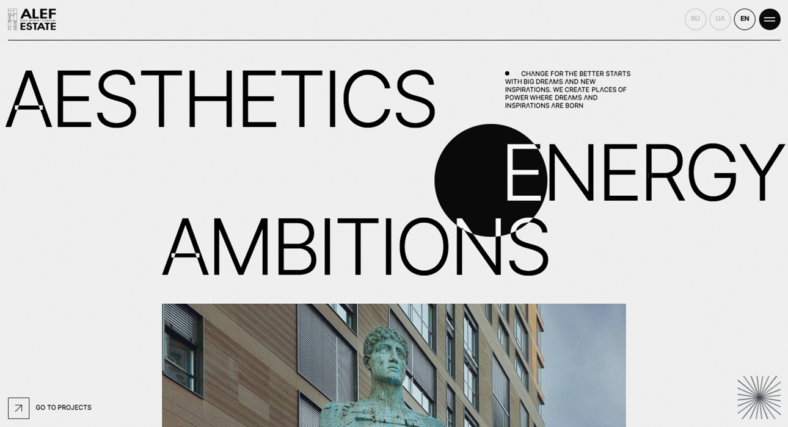

alef-estate
I picked this website because I really like the transitions. I think the main thing that is unique about this website is the mouse. It's like a circle and everytime we hover over something it changes the color. I really like how it's really minimalistic. Also, in the awards section, it's really nice how when we hover there's a wave animation.